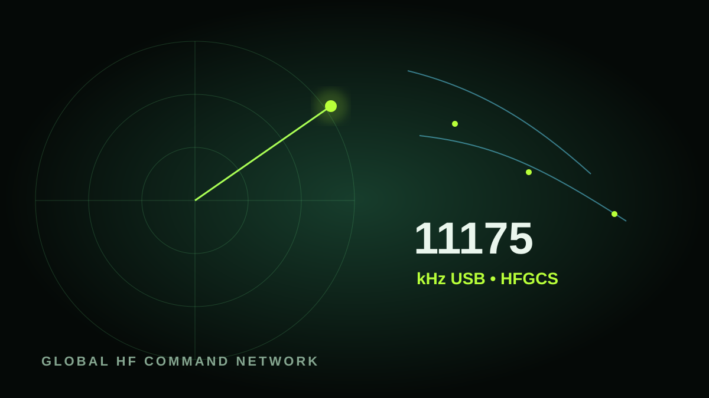
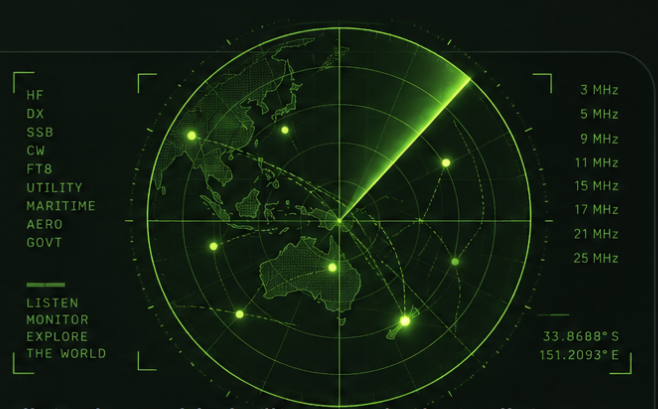
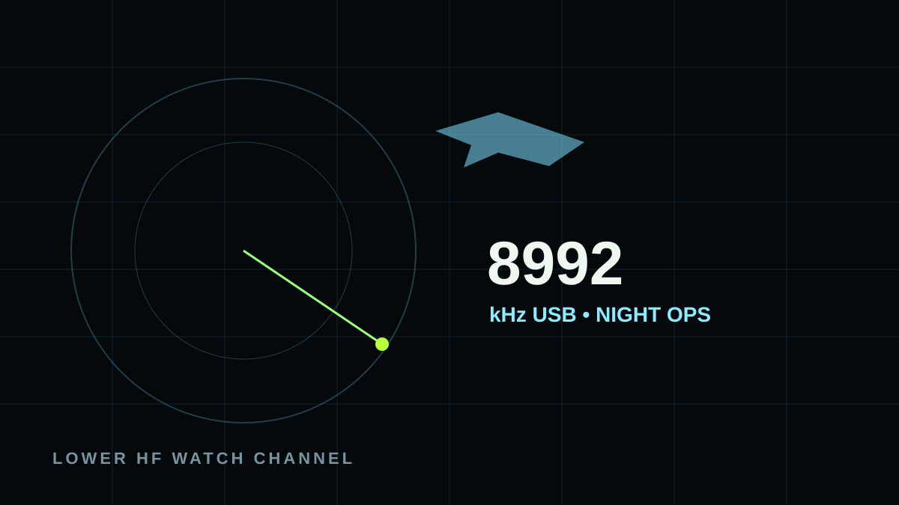
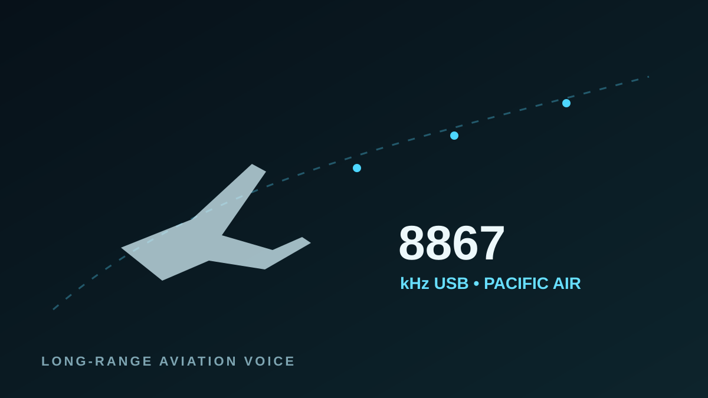
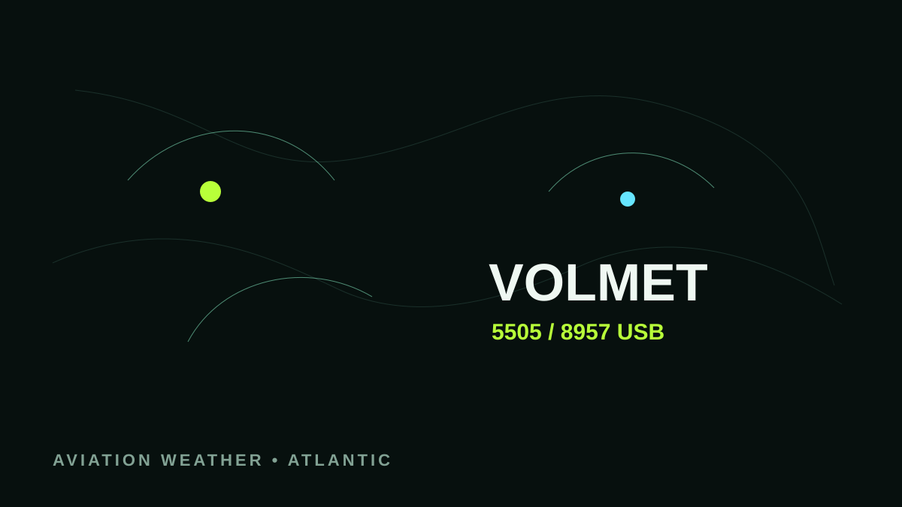
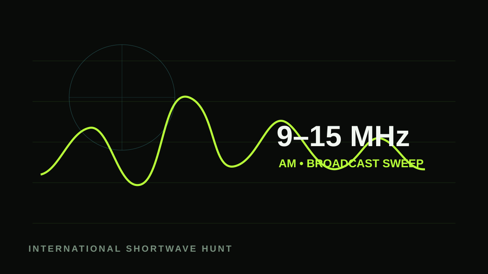
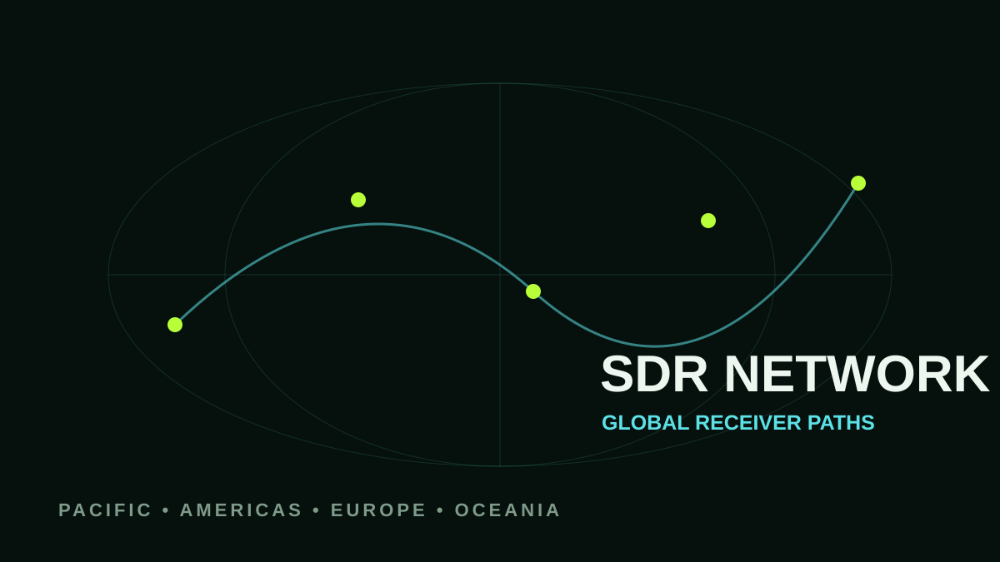

USAF • HFGCS
Primary global channel
11175kHz USB
One of the core HFGCS voice channels. Listen for aircraft calls, ground stations and coded Emergency Action Messages.
A professional listening console built around Sydney. Start with the frequencies most likely to be useful now, launch public SDR tools, follow military and aviation voice channels, and use the clocks and band guidance to decide where to listen next.

The page is arranged like a monitoring desk: decide what is worth trying, open the receiver, tune the target, then compare another SDR if the path is poor.
Use the launch presets below as your starting point. If a frequency is quiet, do not assume nothing is happening — change SDR location, move to another network frequency or shift bands as the Sydney day changes.
Each card gives you the target, mode and the reason to try it. Copy the tuning preset, then open the receiver directory or related live service.

One of the core HFGCS voice channels. Listen for aircraft calls, ground stations and coded Emergency Action Messages.

Useful alongside 11175, particularly as lower HF improves after dark. Keep both in the scan rather than relying on one channel.

A useful Asia-Pacific HF voice target. Aircraft and ground communications can be brief, so leave it open rather than expecting continuous audio.

A structured aviation-weather target. It is useful for checking whether a European lower-HF path is making it through.
A higher Shannon VOLMET option and a good comparison against 5505 when daylight or greyline favours mid-HF.

Use the suggested band as a fast way to find strong international broadcasters before hunting individual stations.
Public SDRs are independently operated and may be full, offline or configured differently. If one receiver is poor, try another location before abandoning the frequency.
These change with Sydney time. They are deliberately biased toward voice traffic and useful public services rather than data-only signals.
Propagation is never guaranteed. Highlighted bands are simply the most logical starting points for the current part of the day.
Common U.S. High Frequency Global Communications System channels. You may hear routine aircraft calls, ground stations or coded Emergency Action Messages.
The most commonly monitored HFGCS frequency and a sensible first channel to try.
Often useful after dark or when the lower HF path is stronger than 11175.
A higher-frequency HFGCS channel that can be worth checking during daylight.
Monitoring public radio traffic does not confirm that an operation is underway. Increased traffic can reflect routine training, exercises, weather, rerouting or other normal activity.
HF aviation frequencies vary by route, region and time. These are useful examples to have ready when listening from Australia and the Pacific.
A familiar long-range aviation monitoring frequency in the Asia-Pacific region.
The receiver location matters as much as the frequency. A signal inaudible from Sydney may be strong from Hawaii, New Zealand, North America or Europe.

Plain-English guidance instead of a wall of solar indices.
Useful reference points for deciding where broadcasters and long-distance paths may be moving into evening or night.
These services are independent of this site and can be opened by any visitor.